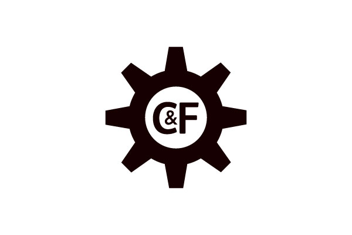

Ideja da se ljubiteljima kafe omogući da kafu kupe direktno u fabrici, kao i da baš tu “na licu mesta”, u fabrici mogu probati i popiti sveže prženu i pakovanu kafu pripremljenu po najvišim standardima svetskih asocijacija u okviru industrije kafe, nastala je davne 2005.godine u Švajcarskoj, a kao pilot projekat nekoliko godina kasnije nastaje i Cafe&Factory, Srbija. U junu 2007.godine, prvi srpski C&F je otvorio vrata javnosti u maloj, skrivenoj ulici u srcu Beograda. U to vreme, mi smo se jednostavno nadali tome da ćemo uneti finu, sveže prženu kafu u domove svojih kupaca uz pomoć malog pržionika, nove savremene opreme i dobro obučenog osoblja koji su bili spremni da informišu klijente o finesama i razlikama u pristupu kafi kao proizvodu koji smo tada doneli na ove prostore. C&F sada ima četiri maloprodajna objekta i iskreno se nadamo da će ih biti još mnogo.
U našim kafeterijama, možete očekivati i pronaći izuzetno kvalitetne kafe u svim oblicima i formama: mešavina za tradicionalnu, domaću kafu, pa zatim cela zrna iz različitih proizvođačkih zemalja, različito pržena, za raznovrsne filter kafe kao i pažljivo pripremljene espresso mešavine. Takođe, u našoj ponudi napitaka na bazi espresso kafe, teško je ne pronaći nešto za svačiji ukus. Naš je cilj jednostavan, da se na kafu gleda radoznalo, da se isprobava na različite načine, da se konstantno uči i napreduje i naravno da se poštuje. Polako rasvetljujući sve ono što je sa kafom moguće uraditi, nadamo se da ćete zauvek promeniti način na koji razmišljate o kafi. A, to je već dobar početak.